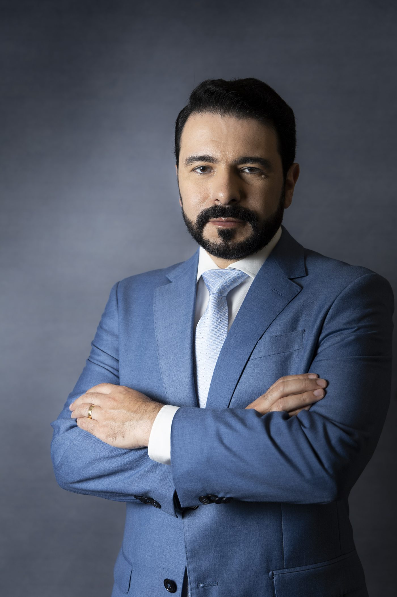
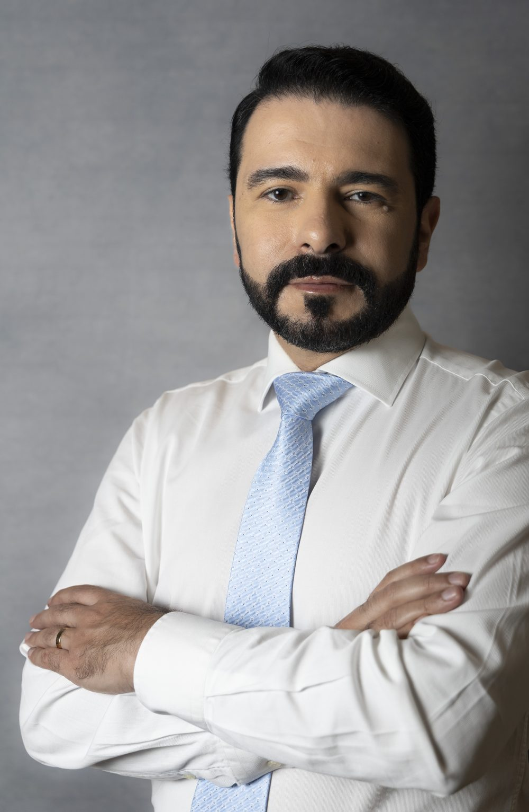
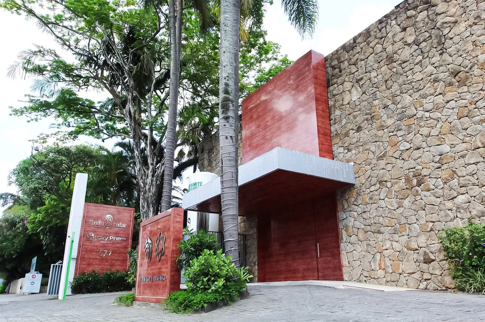
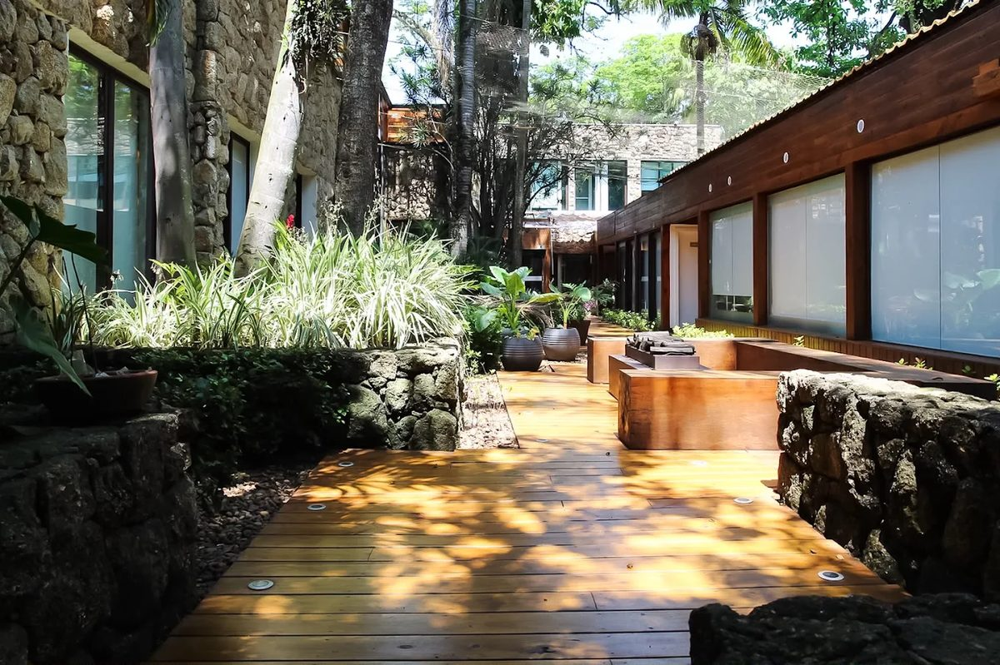
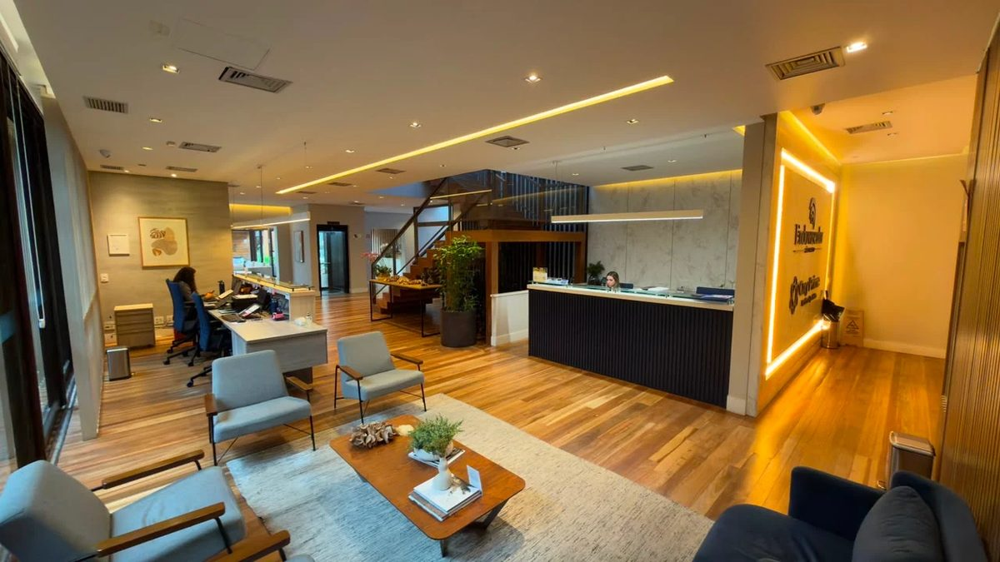
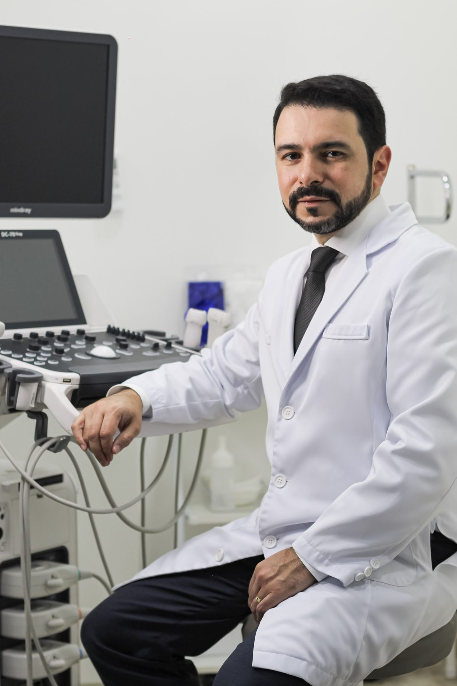

Pressão arterial sob controle e vida mais longa
Mais de 15 anos focados na prevenção e diagnóstico. Da consulta ao ecocardiograma, tudo com o mesmo médico — ciência, cuidado e precisão em cada etapa.


- PhD em Ciências Médicas — USP
- Médico assistente do Instituto Dante Pazzanese de Cardiologia
- Ecocardiografista pelo Fleury e Rede D'Or
- Cardiologista e Ecocardiografista titulado pela Sociedade Brasileira de Cardiologia
- Mais de 15 anos de experiência
- Pesquisador com publicações em periódicos internacionais
- Autor do livro "Bizu — Perguntas e Respostas Comentadas em Cardiologia"
Sou o Dr. Jonathan Souza — cardiologista, ecocardiografista e doutor em Ciências Médicas pela Universidade de São Paulo (USP).
Há mais de 15 anos dedico minha carreira à saúde cardiovascular, com foco em hipertensão arterial, diagnóstico por imagem e prevenção. Minha trajetória foi construída em instituições de referência: formei-me em Medicina pela Universidade Federal de Juiz de Fora, fiz minhas residências em Cardiologia e Ecocardiografia no Instituto Dante Pazzanese de Cardiologia — um dos maiores centros cardiológicos da América Latina.
Hoje atuo como médico assistente na Seção de Hipertensão, Nefrologia e Tabagismo do Dante Pazzanese, onde coordeno o Ambulatório de Hipertensão Renovascular e o setor de Monitorização Ambulatorial da Pressão Arterial (MAPA/MRPA). Sou também cofundador do Núcleo de Pesquisa em Hipertensão da instituição.
Dediquei-me durante meu doutorado ao estudo da hipertensão com foco nas repercussões que ela pode gerar no coração. Fiz isso utilizando as mais avançadas técnicas de ecocardiografia — unindo o que mais amo fazer (diagnóstico por imagem) com a área clínica em que mais me aprofundei (controle da pressão arterial).
Acredito que cuidar é, antes de tudo, ouvir, explicar e acompanhar. Cada paciente que chega ao meu consultório recebe não apenas um diagnóstico, mas um plano claro para proteger o coração e viver mais — com qualidade.



Consultório na Av. República do Líbano, 577 — Jardim Paulista, São Paulo.
Diagnóstico preciso é o primeiro passo para um tratamento eficaz
Todos os exames abaixo são realizados com equipamentos de alta tecnologia e interpretação médica especializada.

Precisa de algum desses exames?
Agende pelo telefone (11) 98227-1577
Eletrocardiograma (ECG)
Avaliação rápida da atividade elétrica do coração. Essencial para detectar arritmias e alterações cardíacas.
Ecocardiograma (ECO)
Exame de imagem que mostra a estrutura e a função do coração em tempo real. É minha principal área de atuação e pesquisa.
Doppler de Carótidas (Ecodoppler)
Ajuda na avaliação do risco de doenças cardiovasculares além de analisar o fluxo sanguíneo nas artérias do pescoço, ajudando a identificar risco de AVC.
MAPA — 24 horas
Monitorização Ambulatorial da Pressão Arterial. Registra sua pressão ao longo de um dia inteiro para um diagnóstico mais preciso da hipertensão.
MRPA — 5 dias
Monitorização Residencial da Pressão Arterial. Você mede a pressão em casa por 5 dias, com leitura mais próxima da sua realidade.
Polissonografia Tipo 3
Exame que monitora o sono para identificar apneia obstrutiva — condição frequentemente associada à hipertensão e doenças cardíacas.
O que torna esse atendimento diferente
Precisão que vem da ciência
Doutor pela USP, com pesquisa focada em ecocardiografia e hipertensão. Seu diagnóstico é baseado em evidência científica, não em achismos.
Olhar para além do número
A pressão arterial não é só um número na tela. Avalio o seu coração por completo — estrutura, função, ritmo e vasos — para um plano de cuidado completo.
Exames no mesmo lugar
Consulta e exames diagnósticos com o mesmo médico. Você não precisa correr entre especialistas para juntar as peças.
Instituições de referência
Vínculo com o Instituto Dante Pazzanese, Hospital São Luiz (Rede D'Or) e Fleury — nomes que reforçam a confiança no seu cuidado.
Acompanhamento de verdade
Hipertensão não é um diagnóstico isolado — ela vem acompanhada de outros riscos e exige olhar integral. Por isso, meu compromisso é percorrer cada etapa com você: da prevenção ao tratamento, com presença constante e ciência em cada decisão.
Depoimentos de quem já passou por aqui
Dúvidas frequentes
Preciso de encaminhamento para marcar consulta?
Não. Você pode agendar diretamente pelo telefone (11) 98227-1577.
O plano de saúde cobre os exames?
A cobertura varia conforme o convênio e o plano. Entre em contato para verificarmos sua autorização.
Hipertensão tem cura?
A hipertensão não tem cura na maior parte dos casos, mas tem controle excelente com o tratamento certo. O objetivo é manter sua pressão sob controle para você viver mais e melhor.
Existem doenças que podem causar a hipertensão ou dificultar seu controle?
Sim, e é por isso que a hipertensão exige visão integral. Problemas de tireoide, doenças das glândulas suprarrenais, alterações nos vasos renais e obesidade podem causar pressão alta ou resistir ao tratamento. Identificar e tratar essas condições é o que diferencia um controle eficaz de um simples "tomar remédio".
O ecocardiograma dói?
Não. É um exame indolor, sem agulhas nem radiação. Usamos ultrassom para ver o coração em tempo real — como uma "filmagem" do seu coração.
Qual é a diferença entre MAPA e MRPA?
O MAPA registra a pressão automaticamente durante 24 horas com um aparelho na cintura. A MRPA é feita por você em casa, durante 5 dias, em horários programados. Ambas servem para um diagnóstico mais real da sua pressão arterial.
Onde fica o consultório?
Av. República do Líbano, 577 — Jardim Paulista, São Paulo - SP, 04501-000.
Cuide do seu coração antes que ele peça socorro
Prevenção é o melhor tratamento. Agende sua consulta e dê o primeiro passo para uma vida mais longa e saudável.